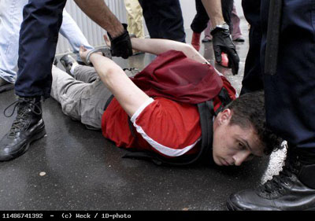

| |
Site dédié à la publication d'informations communiquées par le Collectif des déboulonneurs. En aucun cas ce site n'appelle à des actions illégales. | |
 |
||
|
Accueil du site > Paris > Succès du Collectif des déboulonneurs à Paris : enfin 9 arrestations (...)
La manifestation de désobéissance civile contre le système publicitaire organisée hier soir à Paris est un succès. Malgré la protection rapprochée d’un cordon de police, le Collectif des déboulonneurs a réussi à barbouiller trois panneaux ’Avenir’ à l’angle du boulevard Voltaire et de la rue Amelot. La police a alors procédé à l’interpellation de 9 militants antipublicitaires sous les ovations du public venu les soutenir (une bonne centaine de personnes) et de nombreux médias qui ont été témoins de cette action. Nous contestons le système publicitaire, voulons un débat public, et avons des propositions concrètes. Nous revendiquons une taille maximale d’affichage de 50 cm par 70 cm (comme l’affichage associatif et politique), accompagnée d’une contrainte stricte de densité et la suppression des panneaux énergétivores (lumineux, animés, etc…), ce qui permettrait de marquer un premier coup d’arrêt à l’expansion du système publicitaire. Dans ce sens, tous les 4èmes vendredis du mois, nationalement, inlassablement, jusqu’à gain de cause, nous dégraderons en public, de manière assumée et non-violente les panneaux publicitaires par barbouillage (inscriptions à la peinture). Nous ne craignons pas les procès : nous les attendons ! 
photo P.Weck / 1D-photo
Plusieurs procès sont déjà à l’ordre du jour dans d’autres villes. A montpellier, le 27 juin, 2 déboulonneurs passent devant le tribunal correctionnel. Il en est de même à Alès où 2 barbouilleurs seront également présentés en correctionnelle suite au barbouillage réalisé hier à Anduze. Enfin, JC Decaux a porté plainte contre des barbouilleurs suite à l’action du 26 janvier au Mans. Avant même de connaître les suites des arrestations d’hier, le Collectif des déboulonneurs de Paris persiste et signe sur la voie de la désobéissance civile. Le prochain barbouillage antipublicitaire aura lieu le vendredi 23 juin à 19h00. Le lieu de rendez-vous sera communiqué très prochainement. Des photos de l’action sont disponibles sur le site http://www.1d-photo.org D’autres photos dans notre galerie Reportage TV sur le collectif des déboulonneurs à la une de France 3 Ile de France, avant Chirac… |
|
Site utilisant SPIP - Hébergement Ouvaton
|